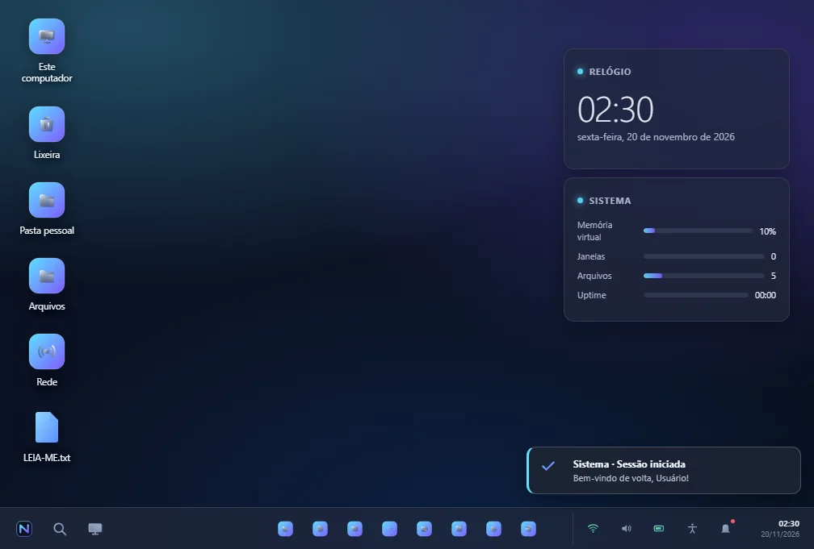

Portátil
Não instala nada. Pode rodar de qualquer pasta ou pendrive.
- Arquivo
NOVA OS.exe - Tamanho114,7 MB
- SHA256…
Seu ambiente local, do boot ao desktop. Rápido, personalizável e feito para rodar direto no Windows — sem navegador, sem servidor, sem complicação.

Os dois arquivos rodam o mesmo NOVA OS 1.1.0. Escolha o portátil para testar ou o instalador para deixar fixo no computador.
Não instala nada. Pode rodar de qualquer pasta ou pendrive.
NOVA OS.exeInstalação normal, com atalhos na área de trabalho e no Iniciar.
NOVA OS Setup.exeQuer conferir a integridade do arquivo? Veja o SHA256SUMS.txt. O Windows pode exibir o aviso de “publicante desconhecido” até o app ser assinado digitalmente — clique em Mais informações → Executar assim mesmo.
Capturas reais do executável. Clique em qualquer imagem para ampliar; use as setas do teclado para navegar.
Não é um tema de Windows nem um atalho de navegador: é um ambiente completo, empacotado em um programa só.
Arquivos, editor, notas, terminal, fotos, música, jogos, monitor e muito mais.
Ajuste temas, dock, janelas, ícones, animações, fontes, sons e layouts.
Coleções prontas, importação de imagens e extração de cores.
Modo claro, escuro, temas salvos e editor de tema próprio.
Partículas, scanline, glitch, typewriter, contador e chime de inicialização.
Música do setup, som de login e áudio de desligamento/reinício.
Ctrl+Alt+L, Win/Meta, Ctrl+Space e Alt+F4 funcionando de verdade.
Arquivos, notas, usuários e preferências ficam salvos entre as sessões.
As dúvidas mais comuns antes de baixar.
Não. O NOVA OS empuga o motor de renderização dentro do próprio executável. Para o usuário, é um programa normal: aparece na barra de tarefas com nome, ícone e janela próprios.
O portátil só abre o arquivo e não cria atalhos — bom para testar ou usar em pendrive. O instalador cria atalhos na área de trabalho e no Iniciar e permite desinstalar depois. Os dois rodam exatamente o mesmo sistema.
Não. Arquivos, notas, usuários e preferências ficam no perfil do aplicativo, separados dos arquivos do sistema. Atualizar o NOVA OS não apaga seus dados.
Não. Como o programa ainda não tem certificado digital, o SmartScreen mostra o aviso de “publicante desconhecido”. Confira o SHA256 na página, clique em Mais informações e depois em Executar assim mesmo.
Não. Você baixa uma versão nova apenas quando quiser. O app não faz checagem online e funciona o tempo todo offline.